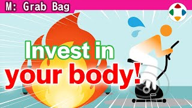
速览
玩游戏要花时间，老实说有点可惜，所以樱井把游戏时间和运动时间重叠：具体来说是一边骑健身车一边玩游戏。运动果然辛苦、难以持续；一边玩游戏一边骑，就能忘记辛苦，比想象中轻松，能长时间运动，推荐。居住环境允许的话，踏步机或跑步机似乎也不错。不过骑车时玩潜行类游戏会不自觉放慢；反过来像赛车游戏，想象成自己踩出速度，效果就很好——注意别过度。有氧运动重在持续一定时长，边玩边骑能忘记辛苦，他有时会骑 2 小时左右。他还常一边骑车玩游戏，一边在另一台电视看节目或视频：两边都进行时可能有一边进不了脑子，想专注时就暂时停掉另一边；各种订阅服务有很多影像，「比不看好」，就当背景放着。回到运动：他说这话有点那个，但他讨厌运动——老实说人都喜欢对身体不好的事；可是运动与否，工作能力明显有差别，最好做一定的运动。他因疫情停掉了健身房、容易不规律，所以想养成在家也稍微动动的习惯。运动器材中特别好的是可调式哑铃：只要选好握把就能自由控制重量，很方便。疫情期间他回家时会爬公寓楼梯，大约 500 级——爬过头导致腿有点毛病，最近有点偷懒，膝关节会咔咔响。凡事注意别过度。
1. 重叠游戏与运动 0:03
玩游戏要花时间，老实说有点可惜，所以樱井把游戏时间和运动时间重叠：一边骑健身车一边玩游戏。
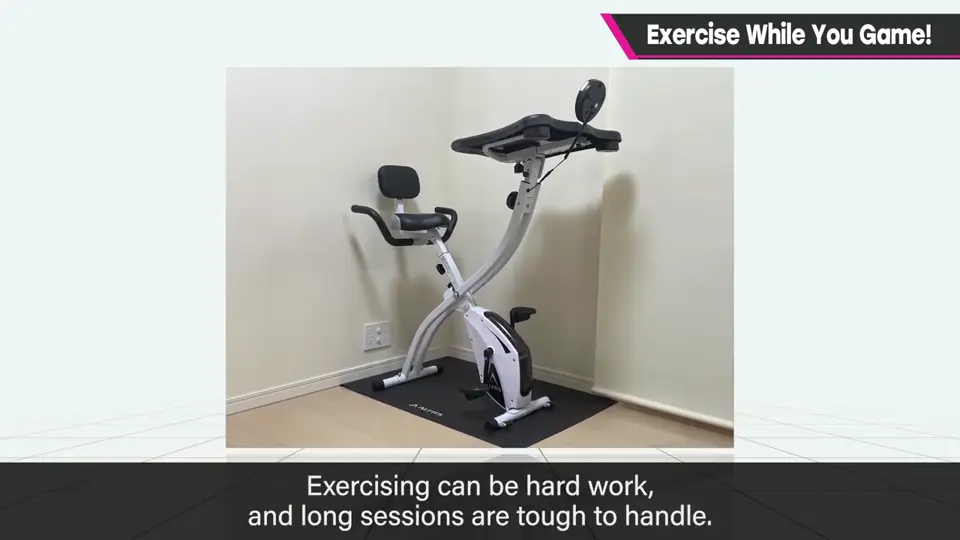
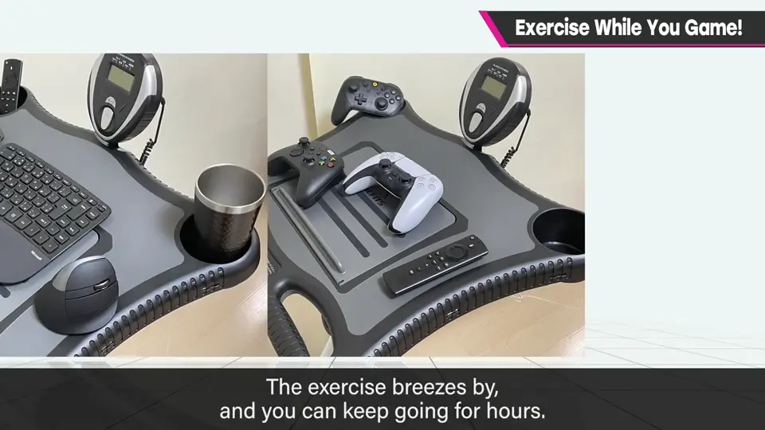
居住环境允许的话，踏步机或跑步机似乎也不错。
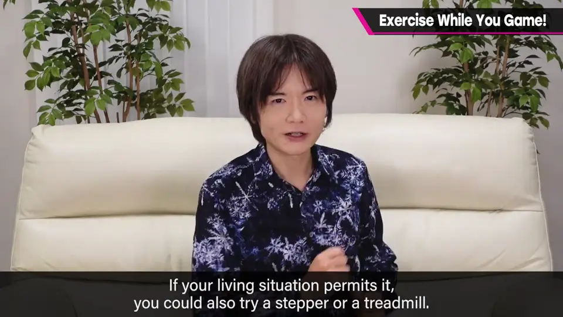
2. 什么游戏适合 0:37
- 玩潜行类游戏时会不自觉骑慢。
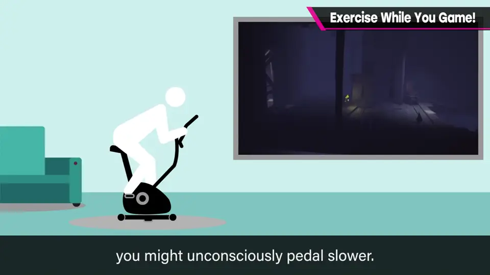
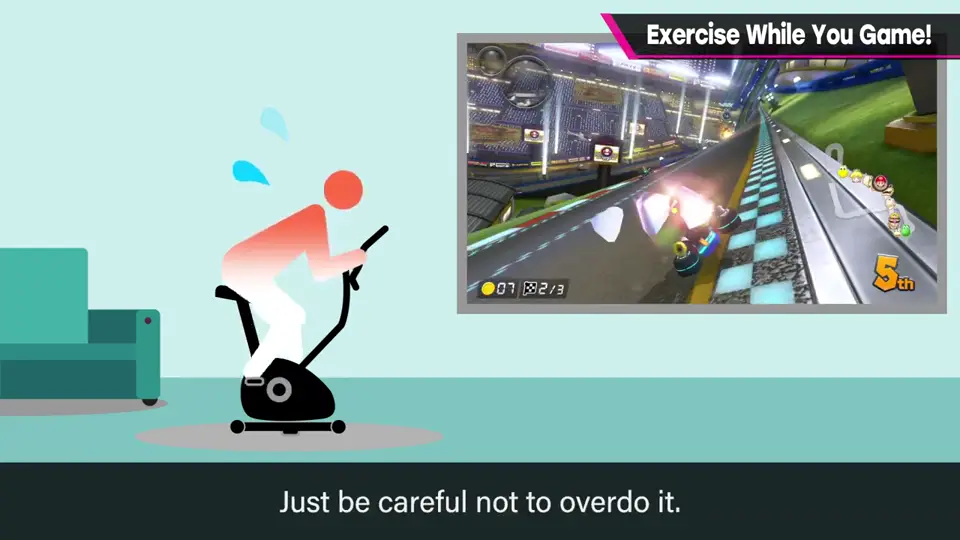
- 赛车游戏想象成自己踩出速度，效果很好——注意别过度。
有氧运动重在持续一定时长，边玩边骑能忘记辛苦，他有时骑 2 小时左右。
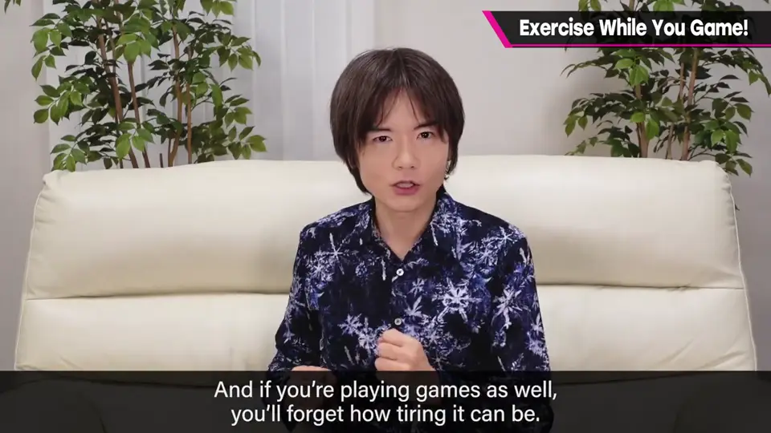
3. 再加一台电视 1:07
他还常一边骑车玩游戏，一边在另一台电视看节目或视频。
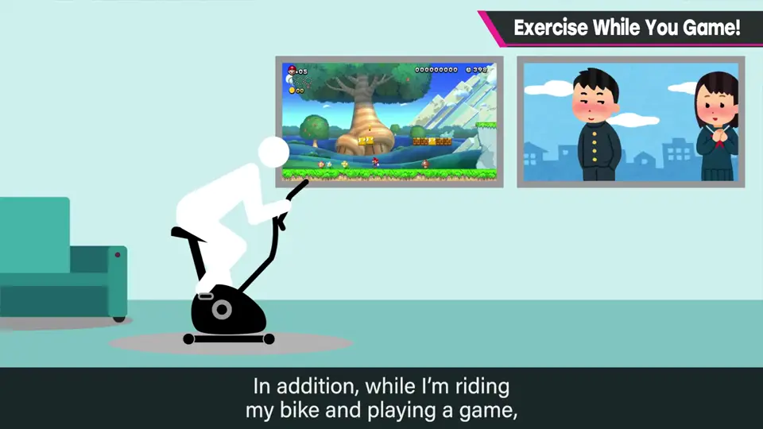
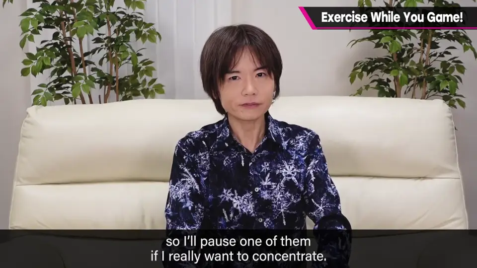
两边都进行时可能有一边进不了脑子，想专注时就暂时停掉另一边；订阅服务的影像就当背景放着，「比不看好」。
4. 讨厌运动，但要运动 1:39
他坦言讨厌运动——老实说人都喜欢对身体不好的事。
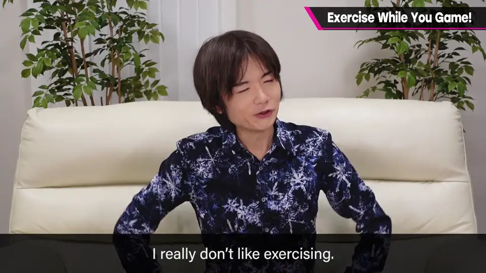
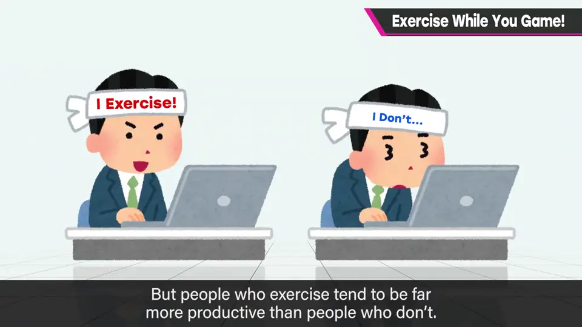
疫情期间停掉了健身房、容易不规律，所以想养成在家也稍微动动的习惯。
5. 器材与过度 2:11
特别好的器材是可调式哑铃：只要选好握把就能自由控制重量。
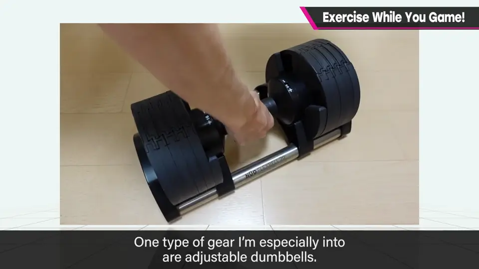
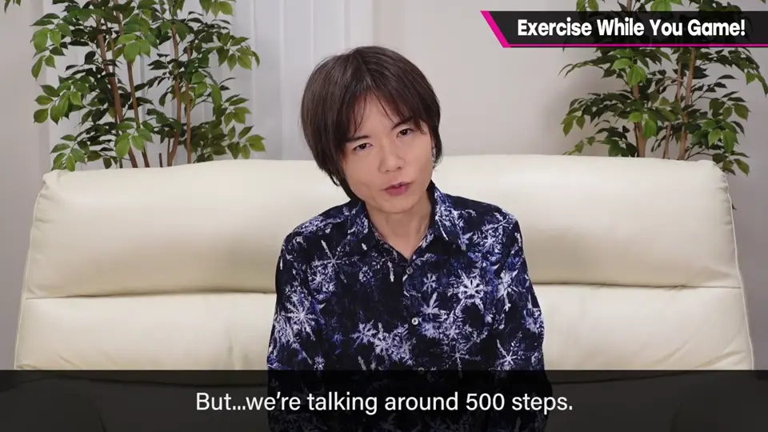
回家时也爬过公寓楼梯，大约 500 级——爬过头导致腿有点毛病，最近有点偷懒。
自测题
1. 樱井怎样把游戏时间与运动结合？
一边骑健身车一边玩游戏，靠游戏忘记运动的辛苦，能长时间骑。 0:24
2. 什么类型的游戏骑车时会效果更好，什么会骑慢？
赛车游戏想象自己踩出速度效果好；潜行游戏会不自觉骑慢。 0:56
3. 他为什么讨厌运动却仍要运动？
运动与否明显影响工作能力。 1:52